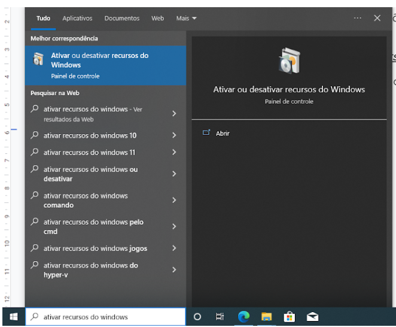
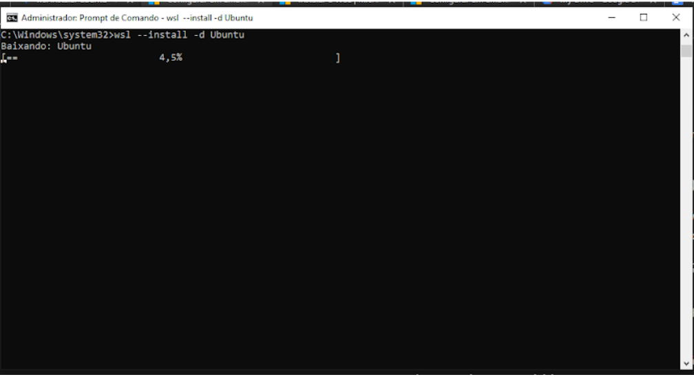
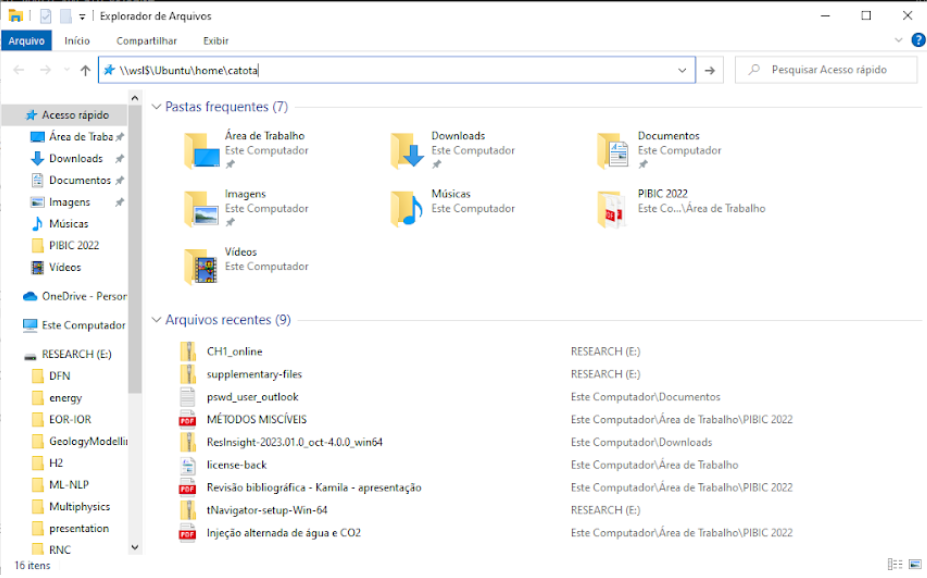

Ativando o recurso do WSL no Windows
Este post é direcionado principalmente aos membros do grupo de pesquisa $\ \mu\Phi$Flow (escoamento multifísico e multifásico) da UFAL, sobre a ativação do WSL2.
O WSL é uma alternativa para que os desenvolvedores pudessem aproveitar o Windows e o Linux ao mesmo tempo em um computador Windows. O WSL (Subsistema do Windows para Linux) permite que os desenvolvedores instalem uma distribuição do Linux (como Ubuntu, OpenSUSE, Kali, Debian, Arch Linux etc) e utilizem aplicativos, utilitários e ferramentas em linha de comando bash do Linux "dentro" do Windows, sem nenhuma modificação (sem ter que utilizar o GRUB - GRand Unified Bootloader "Carregador de inicialização unificado" ou uma maquina virtual).
Para que seja possível utilizar o WSL, é importante checar alguns pré-requisitos. Você deve estar com a versão do Windows 10 versão 2004 e superior (Build 19041 e superior) ou o Windows 11 para ter WSL em sua máquina. Com este pré-requisito satisfeito, vamos para o procedimento de ativação e instalação do recurso WSL.
Passo 1: Ativando o recurso do WSL
-
Na barra de pesquisa do Windows, pesquisar por: "ativar recursos do windows"

-
Procurar e ativar as opções:

Após a ativação será necessário reiniciar o computador para que as alterações sejam contempladas.
Passo 2: Instalando a distribuição Linux
-
Depois da inicialização do Windows. Abrir o PowerShell ou o Prompt de Comando do Windows no modo administrador clicando com o botão direito do mouse e selecionando "Executar como administrador". Em seguida, baixar e instalar a distribuição Ubuntu no wsl (mais informações ver Configurar um ambiente de desenvolvimento WSL | Microsoft Learn ou Instalar o WSL | Microsoft Learn), basta executar o comando:
shell wsl --install -d ubuntu
Após a finalização do procedimento, teremos o Ubuntu no nosso sistema operacional Windows.
-
Abriremos o Ubuntu para configuração e utilização. Para isso, pesquisamos por “Ubuntu”

Importante: As vezes será necessário atualizar o kernel do wsl instalado, para isso devemos instalar a atualização do mesmo, seguindo o link: Etapas de instalação manual para versões mais antigas do WSL | Microsoft Learn (procurar na Etapa 4 ou 5…). Após a atualização, abrir novamente o Ubuntu
-
Com tudo rodando certo, devemos criar o usuário do sistema Ubuntu, e criar uma senha. Possívelmente encontrarás uma menságem similar a:

Aqui definimos um usuário chamado de “catota” e a senha: “123456”
Com isso estamos com o sistema Ubuntu ativo e funcionando

-
Recomendamos fortemente que você crie duas pastas na sua
homede usuário chamadas “opt” e “run”, a primeira para colocar programas de instalação e a segunda para inserir todos os arquivos de casos que serão rodados. Para isso, basta rodar os comandos:
Entendendo o sistema de arquivos do WSL e do Windows
Não recomendamos trabalhar em sistemas operacionais que utilizam os mesmos arquivos/caminhos, a menos que você tenha um motivo específico para fazer isso. Para uma melhor velocidade de desempenho, armazene os seus arquivos no sistema de arquivos do WSL (sistema linux) se você estiver trabalhando em uma linha de comando do Ubuntu (Janela preta). Se estiver trabalhando em uma linha de comando do Windows (PowerShell, Prompt de Comando), armazene os arquivos no sistema de arquivos do Windows.
Por exemplo, para armazenar arquivos de projeto computacionais nativos/rodados no WSL, use o diretório raiz do sistema de arquivos do Linux: \\wsl$\Ubuntu\home\<user name>\project, e não o diretório raiz do sistema de arquivos do Windows: /mnt/c/Users/<user name>/Project ou C:\Users\<user name>\project
Quando você ver /mnt/ no caminho de arquivo de uma linha de comando do WSL (tela preta do sistema linux), isso significa que você está trabalhando em uma unidade montada. Portanto, a unidade C:/ (C:\Users\<user name>\project) do sistema de arquivos do Windows, terá a seguinte aparência (quando montada em uma linha de comando do WSL): /mnt/c/Users/<user name>/project. É possível armazenar seus arquivos de projeto em uma unidade montada, mas a velocidade do desempenho melhorará se você os armazenar diretamente na unidade \\wsl$.
Quando dentro do sistema WSL (tela preta do Ubuntu), podemos ver o diretório em que os arquivos estão armazenados abrindo o Explorador de Arquivos Windows através da linha de comando, usando:
explorer.exe .
Obs.: É necessário ter o “.”, isso indica que queremos abrir o diretório corrente. Portanto, não se esqueça de adicionar o ponto no final do comando para abrir o diretório atual.
Para ver se os arquivos do sistema WSL (arquivos dentro do Ubuntu) estão disponíveis, basta no Explorador de Arquivos do Windows, inserir \\wsl$\Ubuntu\home\catota na barra de endereço (se o usuário que colocaste é "catota").

Se tudo estiver ocorrido bem, deveremos visualizar algo semelhante a isto:

Bom isto é tudo! Espero que tenha ocorrido tudo conforme mostrado.